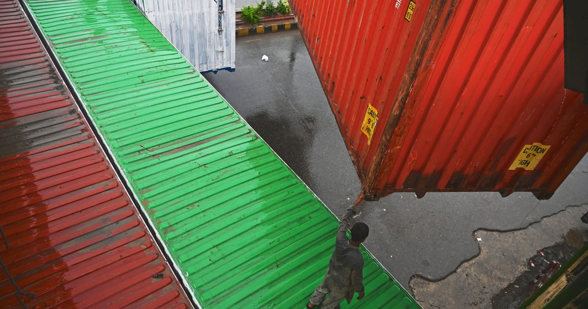

Pakistan and India's Trade Revival: A Hopeless Cause?
Image Credits https://www.politico.eu/article/pakistan-sees-no-room-for-trade-revival-with-modis-india/

It's a story that is all too familiar: two neighboring countries with a history of conflict, unable to reconcile their differences and move forward. Pakistan and India have been locked in a bitter rivalry for decades, with both sides blaming the other for perpetuating the cycle of violence and mistrust.
One area where the two countries could potentially find common ground is trade. After all, both nations have economies that could benefit greatly from increased trade and investment. However, recent comments by Pakistan's foreign affairs chief seem to suggest that any hopes of a trade revival with India are all but dashed.
"There's no scope to do anything with 'belligerent' New Delhi," said Pakistan's foreign affairs chief. "They've sealed the borders, they've cut off all trade, they're killing innocent Kashmiris."
The State of Trade Between Pakistan and India
The relationship between Pakistan and India has long been fraught with tension, particularly over the disputed region of Kashmir. In recent years, trade has been caught in the crosshairs of this conflict, with both countries imposing restrictions and tariffs on each other's goods.
In 2012, the two countries signed a landmark agreement to liberalize trade between them. The agreement would have allowed for the free movement of goods and services across the border, and would have created a number of special economic zones to promote investment.
However, the agreement was never implemented. India cited security concerns as its reason for backing out, while Pakistan claimed that India was not serious about following through on the deal.
Examples of Successful Trade Between Rival Nations
While it may seem that trade between rival nations is a hopeless cause, there have been successful examples in the past. One such example is the relationship between the United States and China.
Despite ongoing tensions and disputes, the two countries continue to engage in a significant amount of trade and investment. In fact, China is currently the United States' largest trading partner, with total trade between the two countries exceeding $560 billion in 2020.
Another example can be found closer to home, in the form of the European Union. The EU is made up of 27 member states, many of which have a history of conflict with each other. However, through the creation of a single market and the establishment of common trade policies, these countries have been able to engage in extensive trade with each other. In 2019, trade within the EU exceeded $4tn.
Conclusion
- Pakistan and India have a history of conflict that has spilled over into their trade relationship.
- The two countries signed a trade agreement in 2012, but it was never implemented.
- Despite ongoing tensions and disputes, there have been successful examples of trade between rival nations, such as the relationship between the United States and China, and the European Union.
It remains to be seen whether Pakistan and India will be able to overcome their differences and revive their trade relationship. However, the examples of successful trade between rival nations suggest that it is possible.
Hashtags: #Pakistan #India #TradeRevival #InternationalRelations
Curated by Team Akash.Mittal.Blog
Share on Twitter Share on LinkedIn